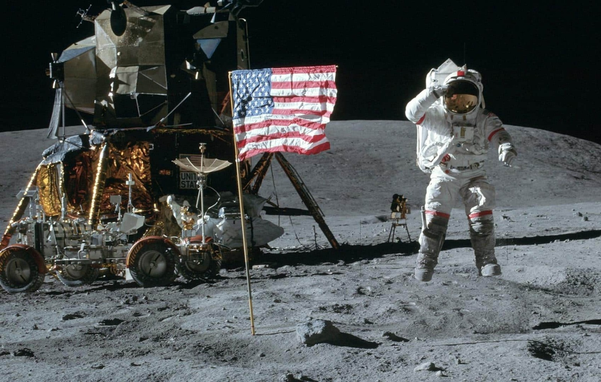
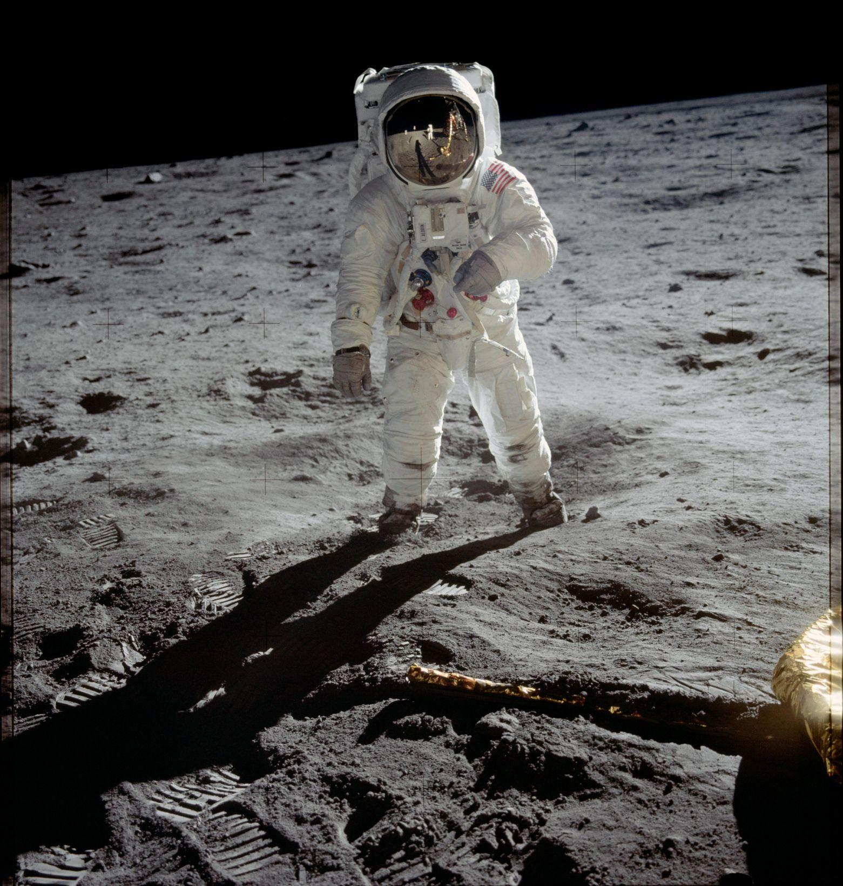

Bem-vindo ao projeto Missões Espaciais. Aqui você poderá conhecer algumas das missões mais importantes da exploração espacial.

A exploração espacial permite estudar a Lua, os planetas, as estrelas e outros objetos do universo.
Prepare-se para iniciar sua exploração!